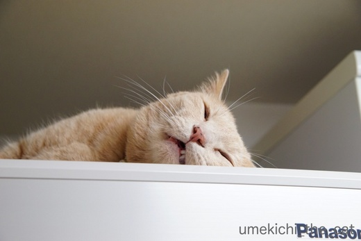

ファンタジスタにはなれなかったよ、と彼は言った [梅吉]
ゆきちさんちで開幕したこてつくんのアイスサッカー。
製氷庫をがさがさすると飛んでくる梅吉なのでこれは喜ぶに違いない！
と、我が家ではバスタブをピッチに開催するとこにしました＾＾
こてつくんとイニエスタも驚く梅吉のファンタジスタぶりをご覧くださいませ。
（45秒 オチなしです）
・・・・・・・・・・・・(^▽^;)
華麗なドリブルとは程遠くなんだか泥臭い感じですw
梅吉の心情を言葉にすると
という感じでしょうか。
氷に「かっ！！」と飛びつく様は猟犬！？
どうやら梅吉はアスリートよりはハンター気質な様です(*>艸<)
漢、梅吉は蓑笠つけたマタギのおっちゃんの後ろが似合うかもねーwww

華麗なドリブルを披露できずに夜空を見つめてたそがれる梅吉。
（なおタイトルは片岡義男イメージでお読みいただけると嬉しゅうございます(〃▽〃)）

その寝顔、インパクト強すぎー！！

カフェオレ色の梅吉

梅吉 2023年8月10日 永眠


梅吉と出会った譲渡会

犬猫の理由なき殺処分ゼロ
妄想広告
UMEKICHI 光

爆発的に早い！
時々攻撃的！
Thanks to Mr.Boss365
爆発的に早い！
時々攻撃的！
Thanks to Mr.Boss365

こんにちは。
ファンタジスタ梅吉君！！本日発表の「ロシアW杯日本代表メンバー」に選ばれるかも！！（⌒ー⌒）
お口に虫が入るから、口は閉じた方が良いだにゃ！！
西野監督も試合中、口開けていただにゃ！？by すもも(=^･ｪ･^=)
by Boss365 (2018-05-31 11:03)
大爆笑ｗｗ
梅吉君はアスリート向きじゃないのが分かったよｗｗ
うちも近いうちにやってみようｗ
さあ、どんなことになるかなー？
あー、その半開きの口に指突っ込みたい～～～～
（じたばた）
by リュカ (2018-05-31 11:03)
チョイチョイと♪
お手てだけじゃなくお口でも！
ハンター梅吉さんなのですね(#^.^#)
狙っているときの梅吉さん！
半開きの梅吉さん！
ｏｎとｏｆｆがはっきりしてますね（笑
by きぃ (2018-05-31 13:27)
もしかして滑らないタイプの浴槽ですか? シンクほど滑らないから反応がイマイチなんじゃないかしら。ピンポン球などに変えるとどうなんでしょう。梅吉さん運動神経は絶対いいはず。ボールがお好みのものならサッカーでもトップ選手は間違い無いです。
by zombiekong (2018-05-31 13:37)
何回かカプッと行きましたね!「
そこが梅吉さんらしくて素敵です(^^)
by kou (2018-05-31 14:19)
梅吉さん、警戒してますねぇ^^;
でも俊敏な梅吉さんだから、慣れればこてつくんみたいに
華麗なドリブルを見せてくれるようになりますよぉ(^O^)
うちの大御所は・・・多分無理だなｗ
by ニッキー (2018-05-31 14:57)
神妙な梅吉さんだ〜
チョイチョイと、その心は？（笑）
ちぃさんに邪魔されないように、高いところでネンネですね〜
たそがれている、梅吉さんの後ろ姿（陶磁器の）置物のようで綺麗です。
by kiki (2018-05-31 15:26)
ニャンタジスタの梅吉さんにはバスタブは狭かった！！！
by じゅらまろ (2018-05-31 15:29)
Boss365さん＞
梅吉がW杯メンバー入りしたら
私もスタッフとしてついて行っていいのかしら・・・
現地で他国の有名選手に一緒の写真をねだりまくる
「あのおばさんだれ？」になっちゃいそうですけど(^▽^;)
口開けて寝るのはおっとからの遺伝なようですw
虫入るよ！って注意しておきますねwww
西野さんはまぢで吸い込んでいそう・・・
（メンバーから漏れたー！あとは緊急招集！！）
リュカさん＞
高速ドリブルが見られると思ったんだけどw
普通のおもちゃで遊んでいる時も「かっ！！」って
仕留める様な動作をするから狩猟の血が騒ぐのかな？梅吉は！？
あおうみ２にゃんさんのも見たい！見たい！！
どうなるんだろうーヾ(*ΦωΦ)ﾉ
開いてる口には指入れて歯をコンコン！だよねー(๑˃̵ᴗ˂̵)و
きぃさん＞
テレビで見たキツネが獲物を仕留める仕草にそっくりで(*>艸<)
ハンティングなんて一度もした事ないのに
本能ってすごいなって思いました！
でも、例え狩ができてもこの気の抜けまくった寝姿では
お外生活はむりですねーwww
zombiekongさん＞
確かにー、浴槽に滑り止めが付いています。
滑りがイマイチだったのかなぁ・・・
今度は洗い場でやってみようかしら。
でもそうすると排水口に手を突っ込もうとするんですよね (^▽^;)
バスタブ＋ピンポン球は跳ねるのをひたすら見てるだけでしたw
kouさん＞
なんでもカプッとせずにはいられないんですよね・・・
最近は薄着＆スボンの裾が短くなって来たので
梅吉のご飯を準備している私のすねもカプッときます (⌒_⌒;
ニッキーさん＞
シンクやフローリングに落ちた氷は速攻取り上げられるのに
「ほんとうにあそんでええんやろか・・・」と
戸惑いの気持ちがあったかもしれません(^▽^;)
時々遊ばせて華麗なドリブルができる様に
一緒に練習しなくちゃ＾＾
kikiさん＞
シンクとフローリングに落ちた氷は速攻取り上げるので
「ほんとうにあそんでええんやろか・・・」だったと思われますw
遊びもおネムもすぐおかーさんがちょっかい出してきますからね(^_－)☆
ちょっかい出せない時は常に変顔を狙われてw
梅吉も大変ですwww
じゅらまろさん＞
それはあるかもー！
大きな器を与えたら大きく育つかしら、梅吉は☆
by ちぃ (2018-05-31 17:44)
梅吉さん、氷にソフトタッチしてますね！
寝顔はインパクトありますね(^^)
by ma2ma2 (2018-05-31 19:26)
スローなネコにしてくれ、しか思い付かなかった(ﾉ_-;)ﾄﾎﾎ…
オチなしです、と但書をつけねばならぬ関西の風土(￣◇￣;)
夜空を見つめる梅吉様の後ろ姿はメチャ可愛いなぁ(〃'∇'〃)
ファンタジスタになりたいと願い事するため流れ星待ってる？
by middrinn (2018-05-31 20:00)
梅吉さん、もしかして冷やっこいのは苦手？！^^;
ウチのも途中で手が冷たいのに気が付くらしく、慌てて舐めて舐めて舐めまくり、もういい！とばかりにシンクから飛び出します。
そんな氷ブームも既に去り、今は知らん顔。飽きっぽいにもほどがある(ーー;)
半開きの口元、可愛いですね～♪
ウチのは時々よだれが・・・もうエエおっさんなので(^▽^;)
by ゆきち (2018-05-31 20:55)
氷、まだちょっと警戒している感じでしょうか。
寝顔、すごい！
完全にリラックスしてるっ！！ ^^;
by yes_hama (2018-05-31 21:43)
ma2ma2さん＞
冷たい感触に腰が引けているんでしょうか(^▽^;)
梅吉の寝顔はバリエーションが多すぎて
いつでも撮影できる様スタンバイも大変なんですよー。
middrinnさん＞
「梅吉に首ったけ」はいかがでしょうかー( ´艸｀)
オチを気にしてしまうあたり私もすっかり
大阪のおばちゃん、梅吉のおかんって感じでしょうかw
梅吉の後ろ姿は色々語ってくれるのですよ・・・
我が家では「きょうは どこへいってしまうのやろう・・・」
とセリフをつけてますwww
ゆきちさん＞
そうなんですー！
普段の氷遊びでは途中で自分の手をびっくりして見つめたり
この動画では冷たいのを嫌がる様にエアていていしてるんですよね(*>艸<)
氷遊びが好きなくせに冷たいのはお気に召さない・・・
こてつくんも梅吉も猫様、ですねぇ。
私は一度だけ梅吉の鼻ちょうちんを見たことがあります！
あの時ほど自分の目がカメラだったら良かったのにと思ったことがありませんwww
by ちぃ (2018-05-31 21:54)
yes_hamaさん＞
氷を取り上げられちゃうと思っているのか
冷たい感触にビビっているのか・・・
あと２〜３回遊ばせてどういう反応をするのか様子を見たいと思っています。
もうとっくに飽きたかもしれませんが(^▽^;)
ハンター気質は残っている様ですが
こんな寝顔をする様ではお外生活は絶対に無理ですよねw
by ちぃ (2018-05-31 21:57)
梅吉さんは好奇心はあるんですが、やる気が少し・・・・
男の子なので、慎重なんですね。
思慮深いんですね。
誉め言葉を一生懸命考えています(^^;
男はこんなものです(^^;
何が言いたいのかよくわからなくて、本当にすみません(^^)
by riverwalk (2018-05-31 23:21)
うーむ、、まあるい氷・・・だったら
もしかしたら奇跡のプレイが・・・？
だって、サッカーボールは四角くないもの。
梅さまはやればできるこです！（笑）
お目目もお口も半開き・・・（＇д＇）
by Ja-Kou66 (2018-06-01 00:07)
あら？
こてつくんに比べて運動量少なっ(^_^;)
ハンターは無駄な動きをせずに、一発で仕留めるのですね！
by よーちゃん (2018-06-01 09:10)
梅吉くん、意外と慎重でそれが面白いｗ
ハンター気質なのね。
最後の白目寝は獲物に逃げられてふて寝するライオンに見える(*^-^*)
家は今朝、小さな跳び蜘蛛がでたよ～！！
くるみとタラが見つけて大興奮してたけど・・・
どったんばったん無駄な動きばかりでそれはそれで驚きましたｗ
蜘蛛さん悠々と壁をお散歩です(≧▽≦)
そうそう。Mineosaurusさんのところで。この先は内緒(*^-^*)
by emi (2018-06-01 10:16)
コメント2回目すみません<(_ _)>
Mineosaursさんのブログで、と～ってもステキな若旦那梅吉さんを見かけたもので。もうご覧になってたらスルーしてくださいませ。
↓
http://m-saurus.blog.so-net.ne.jp/2018-06-01
by ゆきち (2018-06-01 12:11)
riverwalkさん＞
あはは(≧▽≦)
梅吉だってそんなときがあるよーって
一生懸命伝えてくださったのですね！
男の子だっていつも活発だとは限らない？
私もあんまり梅吉にプレッシャーをかけてはいけませんね(^_－)☆
Ja-Kou66さん＞
オン・ザ・ロック用のまあるい氷を作る製氷機がありますよね(｡-_-｡)
ピッチをシンクに移すと張り切ると思うのですが
シンクのものを全部避けるのか面倒で・・・
飼い主が「やるきのおきないこ」なので
梅吉のやるきの芽を摘んでしまいそうですwww
よーちゃん＞
こてつくんはオリンピアン級のアスリートなんですよぉ。
ハンティングならこてつくんと勝負できる！かも！？
emiさん＞
梅吉の新たな一面、知っていただけたかしら ( ´艸｀)
虫に対してはうちもくるみちゃん＆タラくんと同じで
最後は逃げられてしまうタイプ！！
俊敏なんだか鈍いんだかわかりませんw
飼い猫ならではで最後の詰めが甘いのかしら・・・
生活かかってないですからね(*>艸<)
内緒、覗いてきましたよ！
今日から「よっ！若旦那！！」って呼んじゃおうwww
ゆきちさん＞
「なにわの若だんさん」堪能してきました(^_－)☆
by ちぃ (2018-06-01 17:41)
そーっと、ちょいちょいっと‥恐る恐るな感じが可愛い～！
でも、動くじゃん、とはっとなって～
ガブッとひと噛み！さすが梅吉さん。
なんやこれ？ってお顔ですね～＾＾
by sana (2018-06-01 18:53)
バスタブで氷 ナイスですね！うちもやってみようかな。台所の床でやったことはあります(笑)後が大変でした(^-^;
by palpal (2018-06-01 22:14)
梅吉さん、最後のこれなに？的な上目づかいがかわいい♪
そして、大好きインパクト寝顔！
by ふにゃいの (2018-06-01 23:06)
あいかわらず良い寝顔ですねぇ＾＾
by ぽちの輔 (2018-06-02 07:02)
sanaさん＞
やんちゃ坊主なのに意外に慎重なところがある様で・・・(^▽^;)
いつもは氷の生体（笑）を観察する間も無く私に取り上げられちゃうから
いざ向き合うと及び腰(*>艸<)
でもガブっとするところはがぶがぶ猫の本領発揮ですねー！
palpalさん＞
私も台所でやった。そして二度としないと誓った(-_-メ)
ゆきちさんちみたいにシンクはハードル高いけど
バスタブなら気軽ですよね＾＾
ふにゃいのさん＞
床を滑る氷とガチで向き合うことはそうないのですよねー。
いつもは私が取り上げちゃいますから(^▽^;)
何度か遊ばせるとなれて華麗なドリブルをするようになるかなぁ。
じーっと氷が溶けていくのを見ているだけの可能性もあるのですがw
ぽちの輔さん＞
寝顔バリエーションの豊富な子でーす(〃▽〃)
by ちぃ (2018-06-02 07:47)